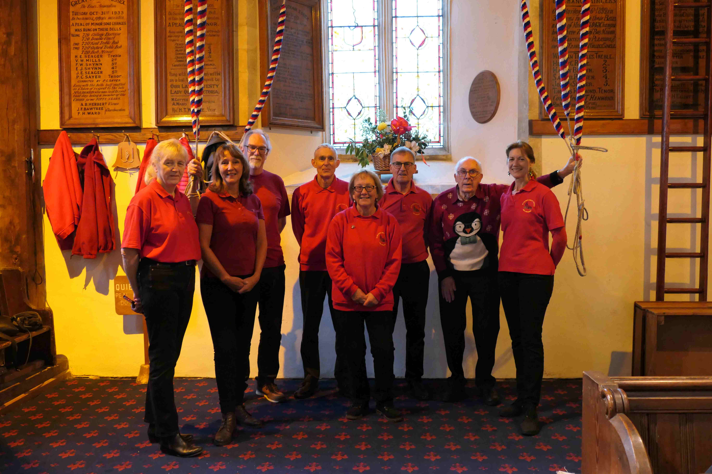
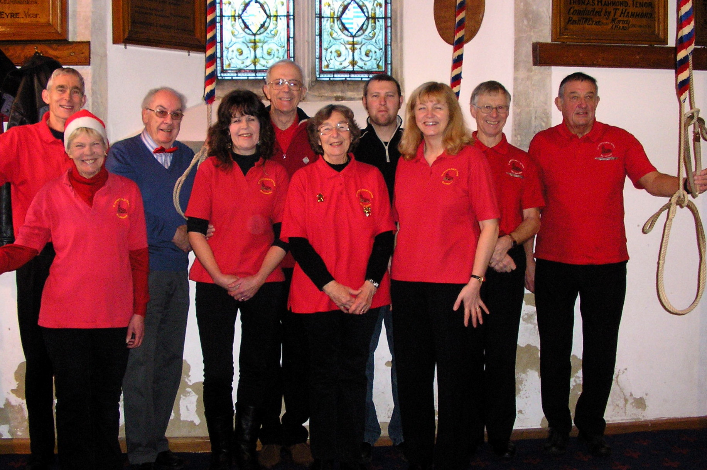
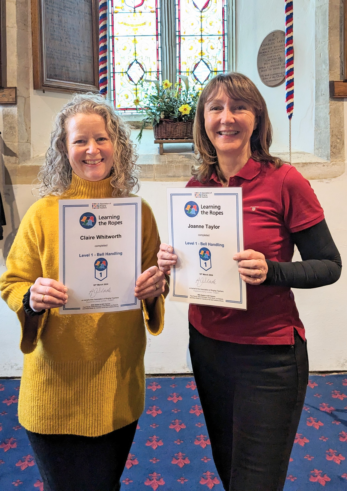
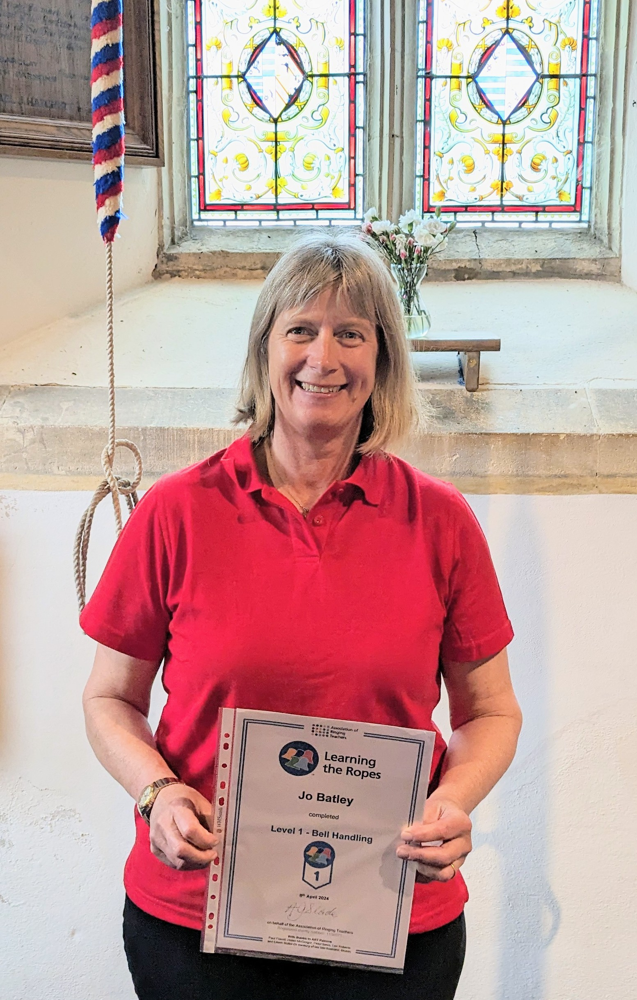
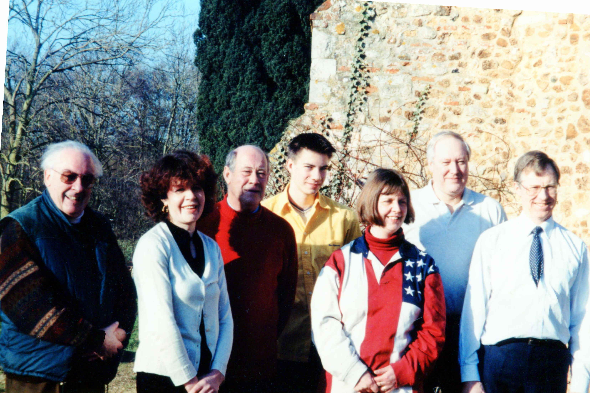
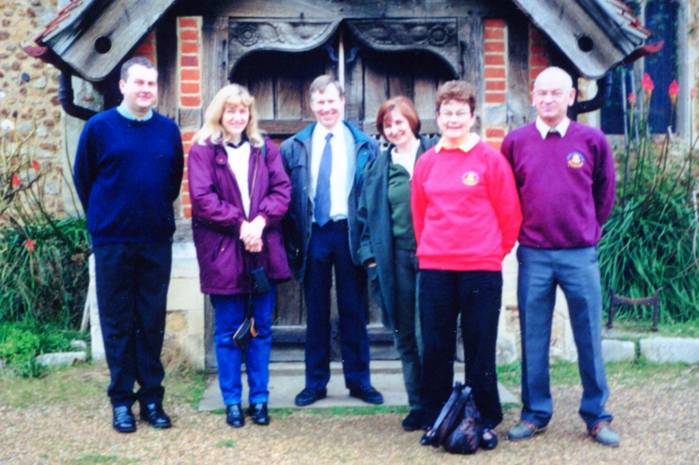
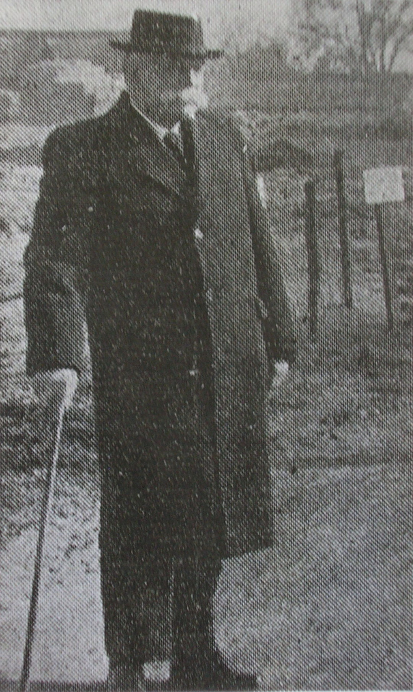
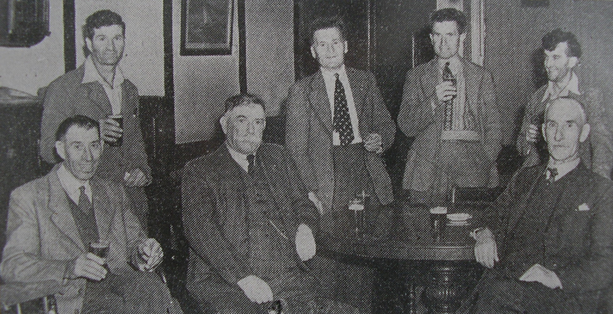
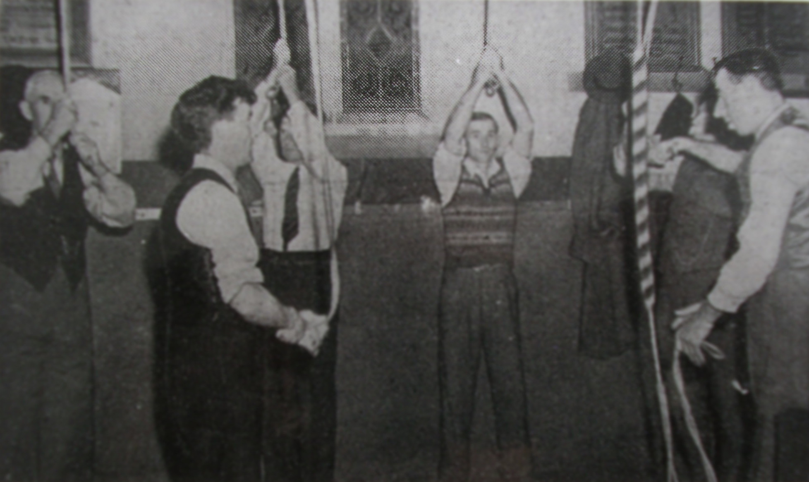

A century and more of ringers have stood at the ropes here. These are some of them — past and present.
We ring at 9.30am on Sunday prior to the 10.00am service. We also ring for Christmas services, weddings, funerals and on other notable occasions. Practice night is Friday from 7.45 to 9.00pm.
Great Totham currently has six active ringers registered with The Essex Association of Change Ringers. This means we have reached a competent standard to ring call changes and have been successfully nominated and seconded by Association members to join.




The new century opened with a flourish at St Peter's. On New Year's Day 2000, Bernard, Lindsey, Roger, Howard, Alison, Alan and David rang the bells. Later the same day, Edwin, Janice, David, Christine, Janet and Michael rang a "Millennium Date Touch" of 2,000 Plain Bob Doubles in 1 hour and 3 minutes.


These are biographies of five ringers who shaped St Peter's tower in the late nineteenth and early twentieth centuries — drawn from parish records, the 1911 census, and the peal boards still hanging in the ringing chamber.
Henry Taylor Williamson Eyre was born at Padbury, Buckinghamshire. He was Vicar of St Peter's from 1877 to 1918, and Secretary and Treasurer of the Essex Association of Change Ringers from 1901 to 1921. He is named on the peal boards of 6th May 1899, 3rd February 1901 and 24th August 1905 as the Vicar — though not as a ringer. He died at Witham in 1926 and is buried in the north-west corner of St Peter's churchyard.
On 6th May 1899, Thomas Hammond conducted the first peal rung by a band of St Peter's ringers. He also conducted the peal of 3rd February 1901, rung following the death of Queen Victoria. He was born in West Kirby, Cheshire in 1870, and married his wife Edith Jessie Martin at Maldon in 1902. According to the 1911 census he was living with his wife near to the Bull Inn, Great Totham, working as a photographer. Thomas Hammond died in 1952.
Percy Charles Sayer was born in Maldon, Essex. He was Tower Captain from 1907 until his death — a tenure of fifty-four years. He conducted the peals of 31st October 1933 and 27th January 1936. He married Alice Cudmore at Lexden in 1899; the 1911 census records him living at Great Totham with his wife, a son, three daughters and his niece, his occupation given as builder. There is a memorial plaque to him on the right-hand side of the west window.

Percy Sayer, c.1958
Charles Henry Ballard was a loyal ringer at St Peter's. He was the first Essex ringer to fall in the First World War, lost on 1st November 1914 while serving on HMS Monmouth.
Frank Newman served in the First World War and survived to return to ringing.

